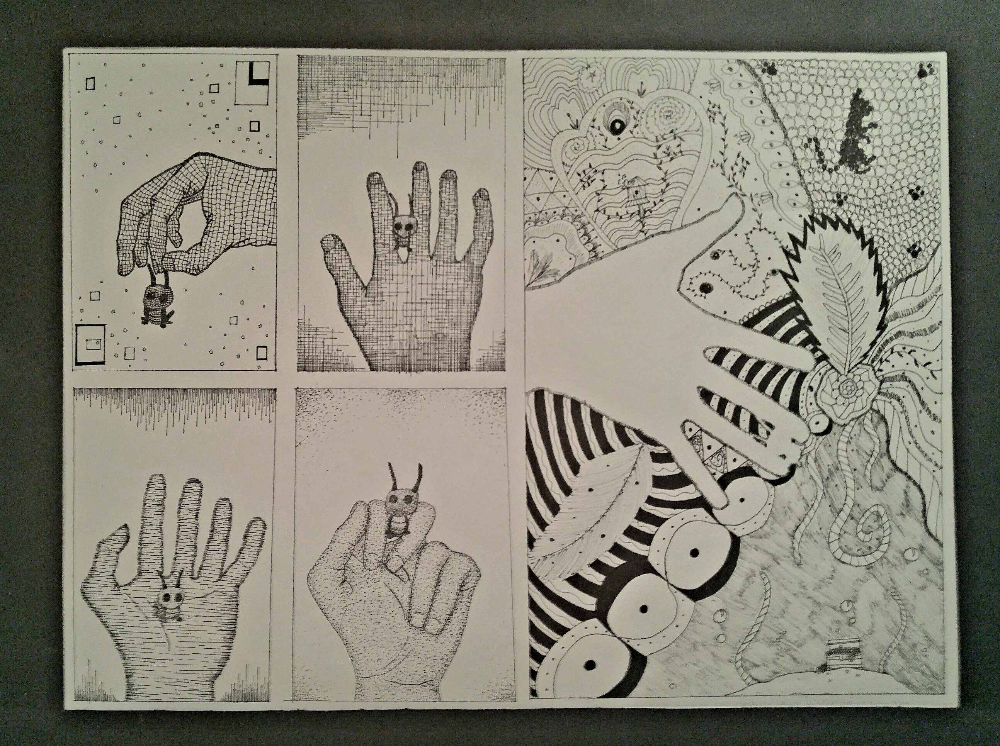

Haven Kotara"The Earth has music for those who listen" - Shakespeare |
Home |
University |
Career |
Hobbies |
Programming |
Gallery |
Contact |
My Hobbies I enjoy expressing myself creatively though a variety of avenues.
From traditional and digital artwork to culinary attempts, I dabble with
what inspires me - or in the case of food-related activities, I dabble
with what sounds delicious. |
 | |||||
GardeningMy gardening hobby is mostly indoors - my room is filled with various plants that are mostly alive.
I'm still new to the hobby and learning as I go, the winter months pose a challenge in figuring out a
new watering schedule. I've tried my hand at a few different plants now and had a variety of luck.
Pothos, some succulents, monstras, micans, sanservias, and alocasias have all done well and survived.
I've unfortunately struggled with carnivorous plants, lilies, orchids, and basically everything else.
Plants can be sensitive and I'm limited to the environment of my room, so some plants are difficult to
keep in those circumstances. In time I'll get the hang of it, I just need to keep throwing money at new
plants and trying new things until they stop dying. I typically purchase my plants from PlantlyAddicted, a small etsy shop. |
EmbroideryPresently, I'm working on some embroidery kits to practice the different stitches and techniques before attempting my own designs. In the future, I'd like to embroider custom tote bags and jeans. Embroidery has been easy for me thus far, as well as relaxing. I enjoy working on a kit while watching shows. The only downside is how long it takes to complete a design, but it doesn't bother me too much. The end result is worth the combined effort. |
Cooking & Baking Nothing beats fresh, homemade meals and baked goods. When I get the opportunity, I enjoy trying new recipes
and learning different ways to combine ingredients. Following a recipe is simple enough in concept, but I've learned
quickly that things tend to be more difficult in practice. Custards are a big example of this - they're as big of a pain
to make as they are delicious. One batch doesn't cook enough in the middle, another will cook too much and burn, there's no
winning. |
||||
Digital Art Most of my drawing is digital art using Clip Studio Paint. I'm not a pro by any means, but I typically
can make things look like the things they're supposed to be. Lately I've been practicing sketching from
life - specifically focusing on humans. People are hard to draw, bodies are weird when detailing; but I'm
slowly getting the hang of it. I often use photos of my friends as references when sketching. I think I put
more love and detail into art that I feel passionate about or connected to. Drawing my loved ones gives me
the same feeling and motivation. In time I'll be able to draw without needing to heavily reference photos,
but for now my crutch is helping me improve my skills. Check out the Gallery to see some of my work! |
Music I dabble with singing, digital music programs, and playing the ukelele. None of which I'm a pro at, but
that doesn't make the hobbies any less fun. When I'm feeling inspired, I'll make up some tunes or attempt
a song cover. |
GamingI think my gaming niche is fantasy, creative games where I can immerse myself in the virtual world. It offers me an escape from the real world into an imaginative reality of my own making. It almost feels like a level up from the experience of reading a good book. My imagination can be brought to life in a way I can see and interract with. It's really realaxing for me and offers a good long-distance activity to do with friends. Presently, my go-to games are:
|
||||
|
Want to see previous versions of this site?Assignment 1Assignment 2 Assignment 3 Assignment 4 |
||||||